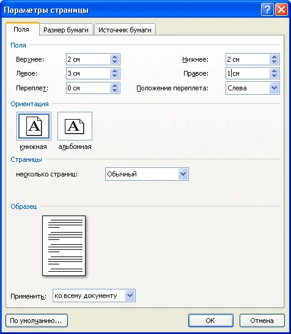
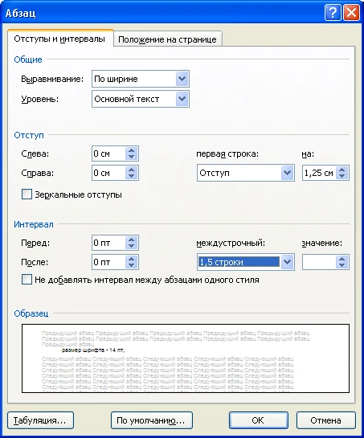
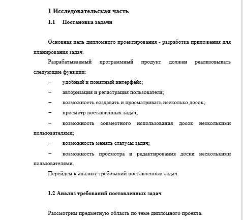
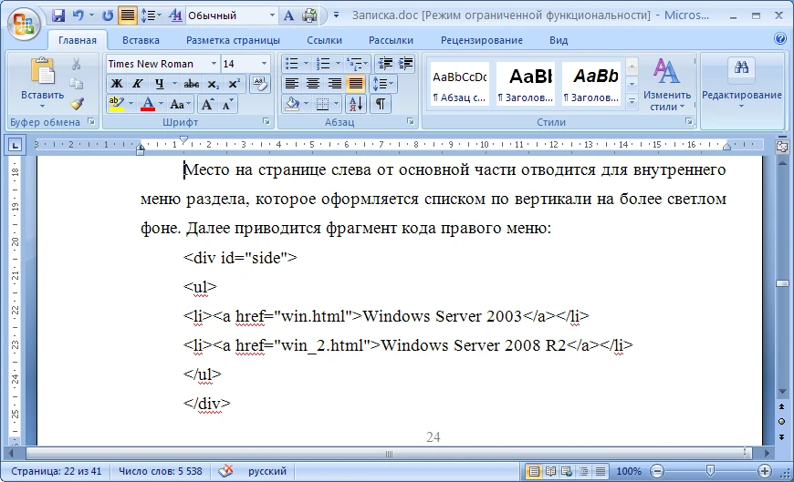

Требования к оформлению пояснительной записки
I Общие требования:
- каждый раздел начинается с новой страницы;
- подразделы внутри раздела через пропуск пустой строки;
- нумерация страниц – внизу, по центру, начинается с раздела Введение (первые стр.– шаблоны, заполняются студентом, стр. 2 – Содержание, стр. 3 – Введение);
- не рекомендуется применение курсива, подчеркивания и полужирного выделения текста для акцентирования внимания;
- поля документа имеют следующие значения (рисунок 1):
- левое – 3см;
- правое – 1см;
- нижнее, верхнее – 2см. 
Рисунок 1 - Установка полей документа
II Для текста основной части ПЗ используется (рисунок 2):
- тип шрифта – Times New Roman;
- размер шрифта – 14 пт;
- междустрочный интервал – 1,5 строки;
- отступ первой строки – 1,25см;
- выравнивание абзацев – по ширине;
- интервал перед и после абзаца – 0. 
Рисунок 2 - Параметры абзаца
III Требования к заголовкам (рисунок 3):
- все заголовки выделяются полужирным начертанием и выравниваются по абзацному отступу;
- заголовки разделов – размер шрифта 16 пт;
- заголовки подразделов – размер шрифта 14 пт
- после последнего заголовка – отступ пустой строки.
Заголовки разделов начинаются с новой страницы, подразделов - через отступ пустой строки от предыдущего подраздела.
Рисунок 3 - Вид заголовков
V Списки могут быть:
нумерованные:
1. Windows OS; 1) Windows OS;
2. Unix OS; 2) Unix OS;
3. Mac OS. 3) Mac OS.
маркированные ("-") (другие виды маркеров не использовать):
- - Windows OS;
- - Unix OS;
- - Mac OS.
VI Вставка рисунков оформляется по следующим правилам (рисунок 4):
- расположение – по центру;
- подпись рисунка – по центру под рисунком, затем – пропуск строки;
- ссылка на рисунок в тексте - перед рисунком;
- нумерация рисунков в основной части ПЗ – сквозная.
Рисунок 4 – Правила вставки рисунков
VII Правила оформления таблиц (рисунок 5):
- подпись таблицы – сверху, левое выравнивание;
- таблица – по центру (по ширине страницы);
- ссылка на таблицу в тексте перед таблицей;
- нумерация таблиц в основной части ПЗ – сквозная.
Рисунок 5 – Правила оформления таблиц
VIII Вставка фрагментов кода
В разделе Разработка ПП допускается вставка небольших фрагментов программного кода по этапам разработки (рисунок 6), выравнивание кода – левое. Код должен быть читаемым (можно вставлять скрин, не рекомендуется на темном фоне).
Рисунок 6 – Вставка программного кода
IX Список использованных источников
Список требуется оформлять в соответствии с ГОСТ Р 7.0.5-2008. Библиографическая ссылка. Общие требования и правила составления. Введ. 2009-01-01. – М.: Стандарт информ, 2008. - 18 с. – (Система стандартов по информации, библиотечному и издательскому делу).
Основные требования:
- источники указывать в алфавитном порядке и проставлять ссылки на них в [ ] в тексте работы (рисунок 7);
- сначала идут текстовые источники (англ., затем русские), далее - интернет-источники;
- для литературных источников указывать библиографическое описание
Пример:
Николаенко Г.В. Методика преподавания аудита: Учебное пособие. – 2-е изд., доп. – Москва: Высш. шк., 2009. – 452с. - для Интернет-источников указывать полное название и автора статьи или книги
Пример:
Власенко В. Бухгалтерский учет основных средств: [Электронный ресурс]. Режим доступа: http://textbook.vlasenkovaccount.ru - не использовать в качестве Интернет-ресурса страницы, адрес или содержимое которых может меняться (например, ссылки на форумы, блоги и данные Википедии).
Рисунок 7 – Пример ссылки в тексте на источник
X Приложения оформляются в соответствии с требованиями:
- нумерация русскими буквами А, Б, …
- код программного продукта:
- выравнивание – левое;
- размер шрифта по выбору (8, 10, 12 пт);
- междустрочный интервал – одинарный.
- при наличии Руководства оператора (программиста) требования к оформлению текста те же, что и для основной части ПЗ;
- нумерация рисунков и таблиц в приложении начинается с 1.